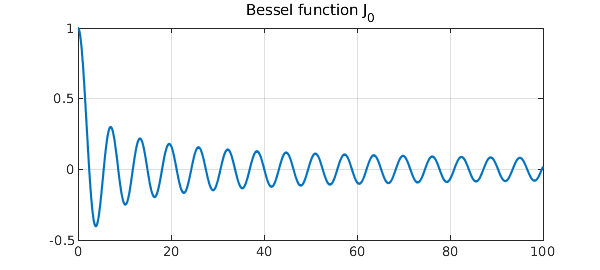

Here is the Bessel function $J_0$ on the interval $[0,100]$.
J0 = chebfun(@(x) besselj(0,x),[0 100]);
figure, plot(J0,'linewidth',1.6), grid on
title('Bessel function J_0','fontsize',16)

We can find its roots like this:
r = roots(J0); hold on, plot(r,J0(r),'.r','markersize',20)
The number of roots can be found with the length command:
number_of_roots = length(r)
number_of_roots =
32
Suppose you wanted to know the numbers of roots in various intervals $[a,b]$. You could define an anonymous function:
rootsab = @(a,b) length(roots(chebfun(@(x) besselj(0,x),[a b])));
For example:
tic
disp('Number of roots between 1000000 and 1001000:')
n = rootsab(1000000,1001000)
toc
Number of roots between 1000000 and 1001000: n = 318 Elapsed time is 0.083466 seconds.